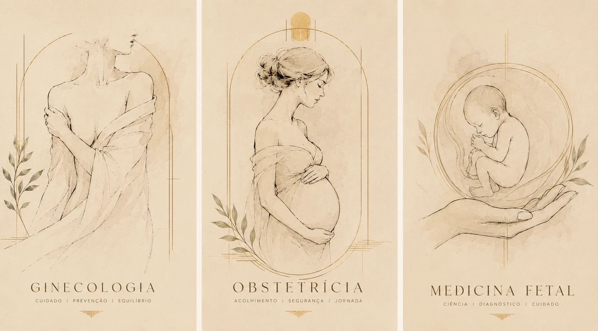

Ginecologia
Cuidado · Prevenção · Equilíbrio
Consulta de rotina, prevenção de câncer de colo e mama, contracepção, alterações do ciclo, corrimentos e dor pélvica. Também o que costuma ficar sem endereço certo: adolescência, climatério e vida sexual.